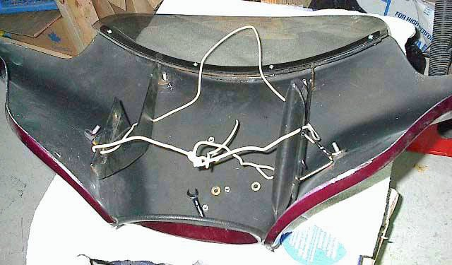
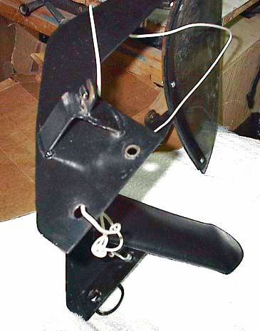
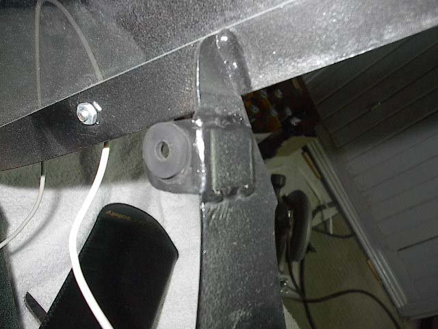
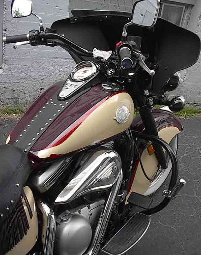

These are photos and info Woodcarver sent me of his fairing mount (Thanks Marcel), I believe he did not have any of the original Harley brackets, so he had to fabricate everything. He was kind enough to send me the patterns at one time, but .. I cannot locate them now :(
1 - I bought a fairing dirt cheap from eBay (if you wait long enough there's always one that comes up at a time when folks aren't bidding - so you can cut your costs that way, and if you live up north, that saving can help offset the extra cost you'll pay for shipping and for taxes at the border crossing :-)
2 - Traced an HD mount from a friend's bike
3 - Removed my windshield so that my brother-in-law and I could manufacture our own mount. The tracing was used to make a rough cardboard template to test the pattern and give us a rough idea of how to design the lower portion which would mount directly to my National windshield mounts which were already on the bike. Then we cut out a set of mounts leaving a bit of extra metal at the bottom so we could adjust as appropriate. Once satisfied we cut the bottom portion of the mount to shape and drilled holes to mate with the windshield mounts.
4 - Next step was to install the fairing by fabricating and welding on the tabs which would bolt up to the inside mounting locations (as opposed to using the L-brackets which are common to the HD installation. Following test fit, those were spot welded to the mounts, another test fit was done, and the final adjustments and welds were made. Cost of the mounts = $0 as the metal was already in the shop.
5 - Followed up by making a windshield (again using a tracing, this time using lexan bought from a local glass shop for under $20).
6 - Manufacture the windshield mount from metal straps (the curve in the straps to match the fairing design was achieved by using a roller device in a local machine shop), then after a test fit, tack welded the inner one to the mounts, test fit the windshield then final weld made and top of mount was trimmed to fit. Removed assembly, took it over to a drill press after having clamped the windshield to strap so as to drill centre hole through the three parts - inner strap, windshield and outer strap. Followed up by clamping the rest of the assembly together and then drilling two outer holes and bolting everything together. Starting in the middle and working your way out ensures that everything will line up and that the parts will be snug when bolted together.
7 - Test drove the bike with fairing attached to make sure that everything is as it should be.
8 - Removed fairing and took it to shop to have painted to match the bike's colors and while that was taking place,
9 - Listed the fairing mould on eBay and sold it...



